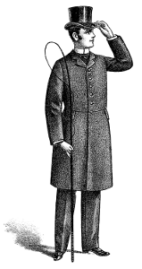
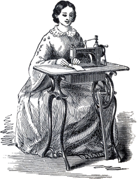
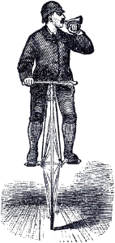
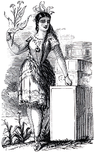
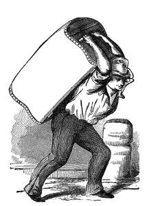
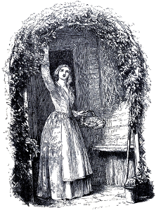
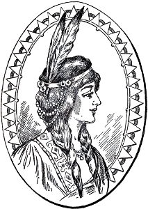
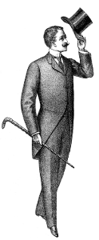
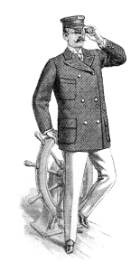

1. Who created jQuery?
John Resig
Brendan Eich
Douglas Crockford

2. What does "CDN" stand for?
Common Data Network
Content Delivery Network
Cyber Digital Netz

3. Which jQuery method is used to take elements off the end of an array?
.pop()
.end()
.last()

4. Which jQuery method is used to take elements off the front of an array?
.shift()
.front()
.first()

5. Which method is used to print to the console?
console.log()
console.print()
console.write()

6. Which of these is equivalent to jQuery()?
!()
$()
@()

7. Which tag is used to attach JavaScript to an HTML document?
<javascript>
<attach>
<script>

8. What term is used for a function that triggers when an event happens?
event follower
event groupie
event listener

9. Which keyword is used to refer to the element that a function is attached to?
this
that
thing

10. What's the correct syntax for a method?
function foo()
foo: function()
foo/function()
Submit
Congratulations! You have completed the quiz.